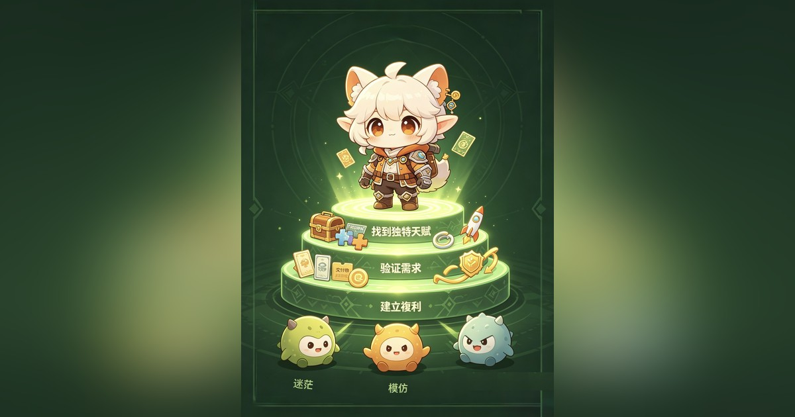

輯 序
選擇比努力重要。從 UC Berkeley 到澳門，從貿易到電商、再到 AI，三次跨界、三次轉折，背後是一套可遷移的底層能力。
這一輯，把那些年踩過的坑、想通的理，濃縮成給年輕人的幾堂實戰課：青年企業家的跨界思維、三次創業轉折的選擇方法論，以及納瓦爾「找到天生該吃這碗飯的領域」。
按時間倒序 · 最新在前

01 / 062026.09.12· 澳門納瓦爾：三步找到「天生該吃這碗飯」的領域
在「成為自己」這件事上，沒有人能比你做得更好。—— 納瓦爾 如果你還在迷茫該做什麼、往哪走，別急著模仿別人。納瓦爾用…
› 02 / 062026.08.23· 澳門
02 / 062026.08.23· 澳門三個選擇，定義你的一生
年輕人做對3個決定，足以拉開人生差距矽谷納瓦爾：住哪裡、做什麼、跟誰在一起，這三個決定，幾乎直…
› 03 / 062026.08.22· 澳門
03 / 062026.08.22· 澳門年賺上億，房租漲1600萬仍可盈利，卻直接停業
（胖東來金句）當年新鄉大胖店，是于東來團隊一步步把冷清的商圈做旺，門店…
› 04 / 062026.07.24· 澳門
04 / 062026.07.24· 澳門拜訪凱普集團，一場意料之外的重逢
巧遇舊識余小望先生，現任凱普康和醫院行政副院長。凱普生物是HPV領域中國先行者，A股…
› 05 / 062026.02.18· 澳門
05 / 062026.02.18· 澳門青年企業家的跨界思維
跨界的本質很多人以為跨界是「什麼都做」，其實真正的跨界是底層能力的遷移。無論是食品、科技還是文化，核心能力都是： 資…
› 06 / 062026.01.10· 澳門
06 / 062026.01.10· 澳門選擇比努力重要：我的三次創業轉折
第一次選擇：回大陸2001年從UC Berkeley畢業，放棄美國的工作機會回大陸。當時很多人不理解，但我看到了中國…
›